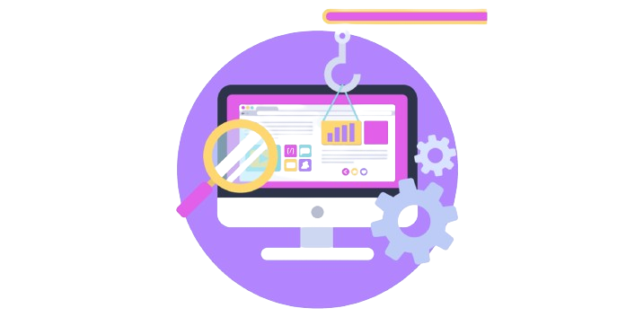

Bienvenid@ a TransDigitalCoop
Ofrecemos servicios de Transformación Digital a las Organizaciones de Economía Social y Solidaria.
¿Quiénes somos
Pre-cooperativa conformada por un equipo interdisciplinario unidos por
los valores cooperativos
(Ayuda mutua, Responsabilidad, Democracia, Igualdad, Equidad y
Solidaridad).

Nuestro Objetivo
Ofertar servicios de Transformación Digital a las Organizaciones de
Economía Social y Solidaria,
con el fin de aportarle a los Objetivos de Desarrollo Sostenible,
especialmente el Crecimiento Socio–Económico y el Trabajo Decente.
Somos líderes en
Cadena de suministro 4.0
La aplicación de tecnologías digitales, como adoptar big data, computación en la nube, blockchain, impresión 3D y realidad aumentada para potenciar la cadena de suministro 4.0.
Desarrollo de software a la medida
Diseñar e implementar soluciones personalizadas adaptadas a sus necesidades, utilizando lenguajes de programación como Python, PHP, Java o JavaScript, entre otros.
